地政学
ロメはギニア湾岸とガーナ国境を結ぶ首都です。細長い国土の南端で、港、外交、ECOWAS圏の交通、内陸国向け物流、海上安全保障が重なります。国境の近さが政治と商業を毎日動かします。越境する家族の記憶も残ります。
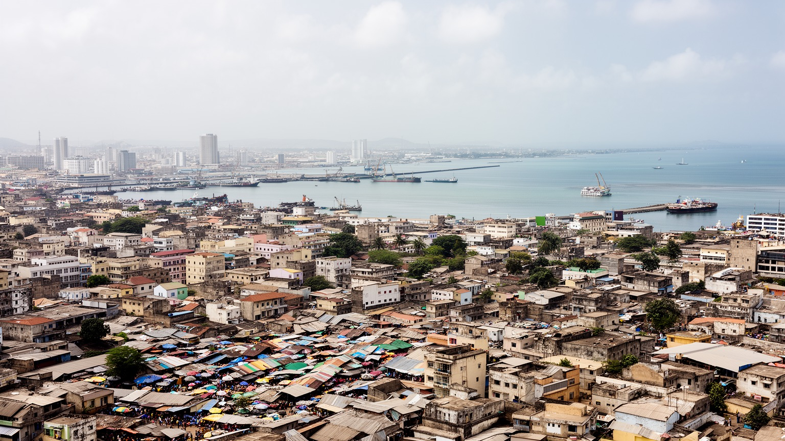
🇹🇬 トーゴ / 首都ロメ / World City Atlas
ギニア湾に面し、ガーナ国境のすぐ横で港、行政、市場、宗教、物流、海岸の暮らしを束ねるトーゴ最大の都市です。国土の細長さと西アフリカ沿岸経済が、街の働き方を形作っています。
湾岸の首都
ロメはトーゴの政治中心であるだけでなく、ガーナ国境、深水港、広域市場、沿岸道路が交差する実務都市です。海岸侵食、若い労働力、越境商業、宗教生活も同じ街路に現れます。
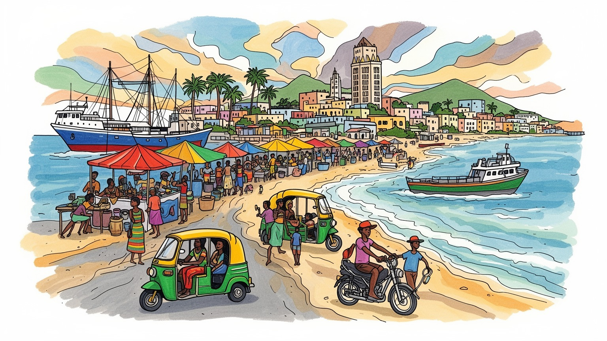
ロメはギニア湾岸とガーナ国境を結ぶ首都です。細長い国土の南端で、港、外交、ECOWAS圏の交通、内陸国向け物流、海上安全保障が重なります。国境の近さが政治と商業を毎日動かします。越境する家族の記憶も残ります。
深水港、行政、卸売市場、金融、通信、建設、物流、燃料取引が雇用を支えます。公式企業と露店、モトタクシー、家内商売が並び、若者と女性の労働が都市経済の底を支えます。港も家計へ届きます。仕事の波もあります。
エウェ系の生活文化、フランス語、ミナ語、カトリック、プロテスタント、イスラム、在来信仰が交わります。大聖堂、市場、祝祭、音楽、家族儀礼が、植民地史と湾岸交易の記憶を今に残します。祈りは近所も結びます。
住民には住宅、排水、海岸侵食、交通、物価、仕事が切実です。旅人は独立記念碑、グラン・マルシェ、海岸、近郊の湖、村、国境の動きを通じて、首都の日常と地域の広がりを知ります。滞在で街の層が深く見えます。
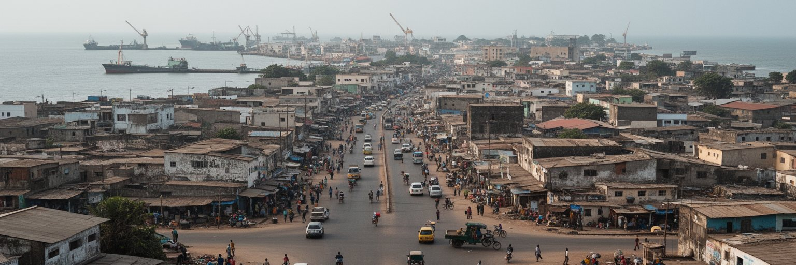
ロメは、トーゴという細長い国の南端で、海と国境を同時に抱える首都です。ギニア湾に面した港は国内の輸出入を処理するだけでなく、ブルキナファソ、ニジェール、マリなど内陸国へ向かう貨物の入口にもなります。西へ進めばすぐガーナのアフラオに接し、国境は地図上の線であると同時に、親族訪問、買い物、通勤、為替、税関、交通規制が絡む生活空間です。市街地は海岸線と並行する道路、市場、官庁、住宅地、港湾施設、倉庫地区を組み合わせて広がり、国家の窓口と近所の商売が近い距離に並びます。港や国境の動きが止まれば、輸入食品、燃料、建材、衣料、学校用品まで影響を受けます。ロメの都市性は、高層ビルの多さよりも、貨物と人の流れを調整する実務にあります。小さな国の首都でありながら、湾岸経済とサヘルへの道をつなぐ役割を持つため、地域政治と日常の買い物が同じ通りで結びつきます。海から入る世界と、内陸へ向かう道路が交わることが、この都市の基本形です。国境を越える親密さと税関の緊張が共存する点に、ロメらしい国際性があります。港湾都市であることは、住民に仕事を与える一方、騒音、渋滞、土地利用の圧力も生みます。海岸の低地に置かれた首都は、国境の開閉や港湾政策を遠いニュースではなく、毎日の価格と移動時間として受け止めます。そこにロメの実務的な世界性があります。
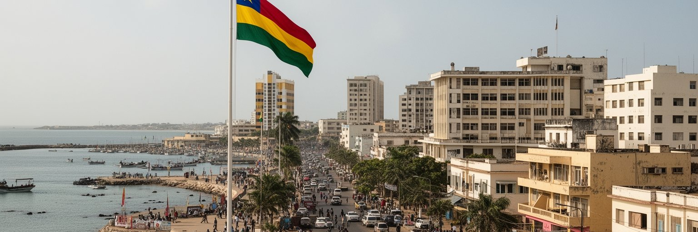
ロメはトーゴの大統領府、省庁、議会、裁判所、外交機関が集まる政治都市です。独立後の国家建設、複数政党制をめぐる緊張、行政改革、地方分権、治安、教育、港湾政策、農村支援は、首都の官庁街で決められ、北部のサバンナ地域や中部の町、沿岸の村へ影響します。トーゴはECOWAS圏に属し、ガーナ、ベナン、ブルキナファソとの関係、サヘルの不安定化、海上安全保障、移民、貿易回廊の管理が外交課題になります。首都の政治は、国際会議や大使館だけでなく、身分証明、学校、病院、土地登記、税関、道路補修、電力供給として住民の生活に触れます。政治への信頼が弱まると、若者の将来設計や投資、地域間の連帯にも影響します。ロメでは、国家の近代化を語る言葉と、市民が窓口で経験する手続きの質が常に比べられます。行政が透明で、港から得る収入が教育や排水、保健へ戻るかどうかは、都市の公共性を測る重要な基準です。小さな国では首都への集中が強くなりやすいため、ロメが地方を吸い上げるだけでなく、各地域へ機会を返す仕組みを持てるかが問われます。官庁街の決定は、遠い村の市場価格や若者の移動にもつながります。首都の政治を読むことは、国家の制度が暮らしへ届く経路を読むことです。公的な判断が住民に見える形で説明されるほど、港湾収入や開発計画への信頼も高まります。政治都市としての成熟は、中心部の建物よりも制度の届き方に表れます。
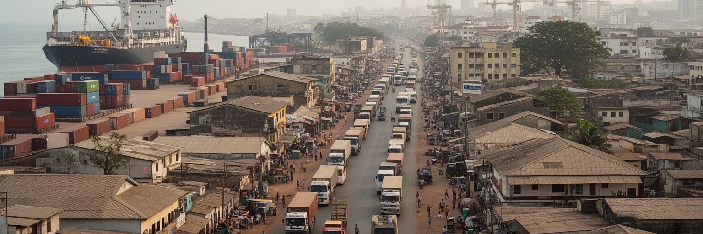
ロメ港は、トーゴ経済の最も重要な装置の一つです。コンテナ、燃料、食料、建材、車両、機械、再輸出品がここを通り、税関、倉庫、保険、銀行、運送会社、整備工場、飲食店、警備、非公式の小仕事まで幅広い雇用を生みます。港の競争相手は近隣のアクラ、テマ、コトヌー、アビジャンであり、荷役の速さ、料金、道路接続、治安、透明性が貨物の選択を左右します。内陸国向け貨物は、海のない地域とロメを結び、トーゴに地域物流の収入をもたらします。一方で、港湾経済は景気や国際運賃、燃料価格、税制変更に敏感で、仕事の安定は職種によって大きく違います。大型トラックは道路を混ませ、排気、事故、道路損傷、住宅地との摩擦も起こします。港の近代化は効率を上げますが、低技能労働や小規模商人が取り残されない制度も必要です。ロメの産業を読む時、港を単なる施設として見るのでは足りません。港は国家財政、都市の渋滞、若者の雇用、内陸国との外交、消費財の価格を結ぶ巨大な生活インフラです。港から出るトラックの列は、遠くの市場の棚とロメの家計を同時に動かしています。物流の改善が公平に働けば、首都の成長は周辺地域の収入にもつながります。効率と包摂を両立できるかが、港湾都市の成熟を決めます。港湾収入が教育や道路補修、排水へ戻る仕組みが見えれば、港は一部企業だけでなく市民全体の資産になります。物流都市の価値は、速さと公正さの両方で測られます。
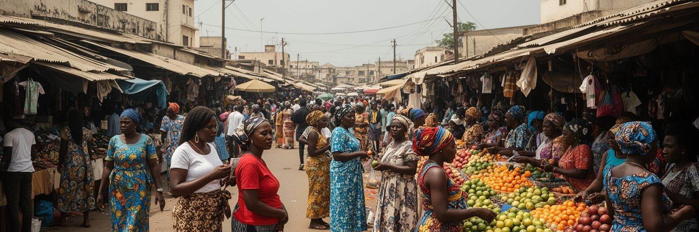
ロメの市場は、都市経済を理解するための中心です。グラン・マルシェや各地区の市場では、布、食品、香辛料、日用品、携帯電話関連品、輸入品、近隣国の商品が行き交い、多くの女性商人が家計と流通を支えています。西アフリカの都市では、公式統計に表れにくい小売、仲買、露店、家内労働、信用の貸し借りが大きな役割を持ちます。布を扱う商人、食品を売る母親、国境を越えて商品を運ぶ人、携帯送金で仕入れをする若者は、都市の金融と物流を日々の判断で動かしています。市場は収入源であると同時に、情報交換、親族ネットワーク、宗教行事、政治の噂、価格交渉の場でもあります。火災、衛生、混雑、雨季の排水、警備、場所代、取締り、輸入規制は商売のリスクになります。女性の商業力はロメの強みですが、信用、保育、相続、土地、暴力からの保護が不十分なら、負担は個人に押し付けられます。市場を観光的な色彩だけで見ると、そこにある労働の重さを見落とします。ロメの市場は、港から入る商品を家庭の台所へつなぎ、地方の農産物を都市の食卓へ届ける場所です。都市の活力は、交渉の声、荷物を運ぶ手、朝早くから並ぶ小さな店に宿ります。市場を整える政策は、道路やビル整備と同じくらい都市の未来を左右します。働く人の安全が、街の商業力を長く支えます。小さな商いを守ることは、低所得世帯の収入を守ることでもあります。
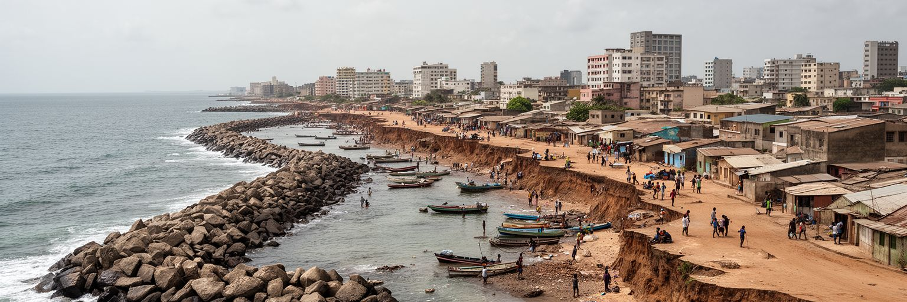
ロメは海に開かれた都市ですが、その海は同時に大きなリスクです。ギニア湾沿岸では海岸侵食、高潮、砂浜の後退、港湾施設による漂砂の変化、気候変動による海面上昇が、住宅、道路、漁業、観光、公共施設に影響します。低い海岸平野に広がるロメでは、雨季の排水不良や内水氾濫も生活を乱します。排水路が詰まれば、通勤、学校、商売、衛生、感染症リスクに直結し、低所得地区ほど被害を受けやすくなります。海岸保護の工事は必要ですが、護岸や突堤だけで問題が解決するわけではありません。砂の移動、湿地、住宅の立地、廃棄物管理、港の拡張、道路計画を一体で考える必要があります。漁民や海辺の商人にとって、海岸は生活の場であり、単なる景観資源ではありません。観光客が見る波打ち際の美しさの裏で、住民は家の移転、土地権利、漁場の変化、保険の不在に直面します。ロメを気候都市として読むと、地球規模の変化が首都の日常に直接届くことが分かります。海は雇用と開放感を与える一方で、都市計画の遅れを容赦なくあらわにします。海岸を守ることは、道路や建物を守るだけでなく、住民の記憶、信仰、仕事の場を守ることでもあります。暑さと雨、波の力を前提にした都市づくりが、これからのロメの安全を決めます。気候対策は専門家だけの課題ではなく、排水路を掃除し、危険な低地を避け、移転を公平に進める日々の合意でもあります。海辺の未来は都市全体の未来です。
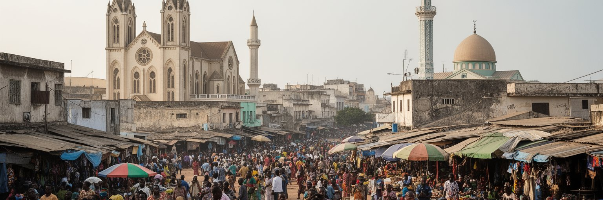
ロメの文化は、エウェ系をはじめとする湾岸の生活文化、フランス語の行政、ミナ語やエウェ語の会話、カトリック、プロテスタント、イスラム、在来信仰が重なってできています。大聖堂や教会、モスク、家庭の祭祀、市場の護符や薬草、音楽と踊りは、別々の世界ではなく同じ都市の時間を分け合っています。日曜礼拝、金曜の祈り、家族の葬儀、結婚式、命名、地域の祭りは、宗教施設の外まで人の動きを作ります。植民地期の建築や独立後の記念碑は国家の歴史を語りますが、住民の記憶は家族の移住、交易、学校、言語、信仰の選択としてもっと細かく残ります。ロメでは、キリスト教的な都市景観と在来信仰の実践が同時に存在し、近代化と伝統は単純な対立ではありません。音楽、ラジオ、教会の合唱、路上の販売声、葬儀の行列は、街の音を作ります。文化を観光の飾りとして扱うだけでは、日常の規範や助け合いの仕組みが見えません。信仰共同体は、貧しい世帯への支援、若者の相談、教育、病気や死への対応にも関わります。ロメの文化的な厚みは、港から入る商品だけでなく、人々が祈り、踊り、語り、商いを続ける力にあります。宗教の多様性は、都市の礼儀と距離感を育てる重要な土台です。異なる祈りが近くにあることが、首都の日常を柔らかくしています。言葉と信仰を切り替えながら暮らす力は、国境都市の交渉力にもつながります。
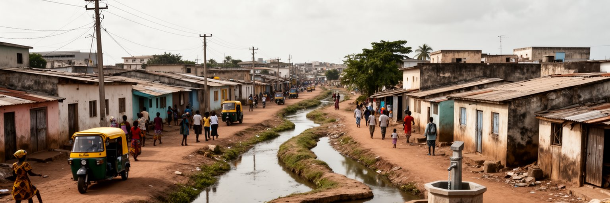
ロメの人口集中は、住宅、排水、道路、電力、水道、学校、診療所、廃棄物管理に強い圧力をかけています。グレーター・ロメは国土のごく一部に多くの住民を抱え、中心市街地からアゴエニヴェ方面、郊外の住宅地、未舗装の道が残る地区へ広がっています。家賃や土地価格が上がると、若い世帯や地方から来た人は中心から遠い場所に住み、通勤時間と交通費を負担します。雨季には道路の水たまり、排水溝の詰まり、浸水、衛生問題が生活を難しくし、乾季にはほこりと暑さが体力を奪います。電力と水道の安定は、家庭だけでなく小売、冷蔵、飲食、通信、学習にも不可欠です。モトタクシーは移動の柔軟性を与えますが、事故、排気、料金交渉、安全の課題もあります。都市サービスが整わないまま市街地が外へ伸びると、行政は後追いで道路や学校を作ることになります。ロメの住みやすさは、中心部の記念碑や港湾施設だけでは測れません。夜に安全に帰れる道、子どもが近くの学校へ通えること、雨の日にも商売を続けられる排水、病気の時に届く診療所が、首都の信頼を作ります。住宅地の整備は、単なるインフラ投資ではなく、都市の市民権を広げる作業です。誰が公共サービスに近く、誰が遠いのかを見ると、ロメの成長の偏りが分かります。暮らしの基盤を細かく整えることが、都市全体の力を高めます。
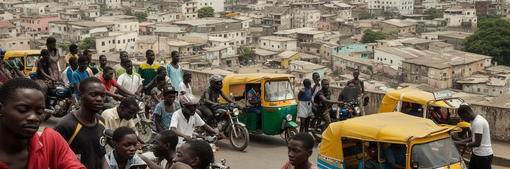
ロメは、トーゴの若者が教育、仕事、商売、移動の機会を探す場所です。大学、専門学校、職業訓練、携帯通信、銀行サービス、港湾関連の仕事、飲食、小売、配送、モトタクシー、建設現場が、都市での進路を作ります。地方から来た若者は、親族の家に住みながら学校へ通ったり、日中に働き夜に学んだりします。フランス語の学歴、現地語の商売力、英語圏ガーナとの近さ、スマートフォンを使う金融や販売の技能は、収入の差を生みます。ただし、仕事は安定しているとは限らず、低賃金、事故、社会保障の弱さ、住まいの不安、政治への不信が将来を狭めます。女性の若者は、商業、家事労働、育児、学業を重ねやすく、暴力やハラスメントからの保護も重要です。国境が近いことは、買い付けや移動の機会である一方、取締りや為替、書類の問題も伴います。ロメの若さは、街の騒がしさや流行だけではありません。限られた資本で小さな商売を始め、携帯電話で顧客を探し、親族を支えながら自分の未来を作ろうとする力です。若者が都市に残りたいと思えるには、教育の質、透明な採用、手ごろな住宅、安全な交通、文化の場が必要です。首都の活力は、若い世代が移動だけでなく定着も選べるかにかかっています。機会が見える都市は、国全体の希望を支えます。街角の小さな起業が制度につながれば、若者の工夫は一時的な生存策から都市の産業へ育ちます。
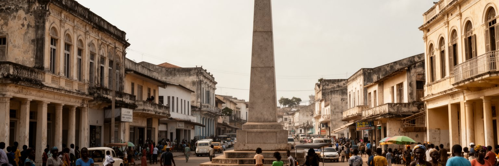
ロメの歴史は、エウェ系の集落、湾岸交易、ドイツ植民地、フランス統治、独立国家の首都という層でできています。十九世紀末に植民地行政と商業の拠点として成長し、鉄道、港、官庁、教会、商店街が都市の骨格を作りました。植民地期の建物や通りは、今日の観光資源であると同時に、強制労働、税制、土地支配、輸出作物、教育制度の記憶を含みます。独立記念碑や国家的な広場は、主権回復の物語を示しますが、都市の記憶はそれだけではありません。市場の商人、海辺の漁民、国境を行き来した家族、宗教施設、学校、港で働いた人々が、それぞれ違う歴史を持っています。ロメを歩く時には、植民地建築を美しい背景として消費するだけでなく、誰がその都市を作り、誰が中心から遠ざけられたのかを考える必要があります。歴史を説明する案内板、博物館、学校教育、保存と再利用の工夫が増えれば、街の層は読みやすくなります。ロメは古都のように連続した石造景観を誇る都市ではありませんが、港と国境に育てられた近代史の断片が濃く残ります。記念碑の前に立つことは、国家の物語だけでなく、湾岸で生きてきた人々の商売、移動、信仰を思い出すことでもあります。都市の歴史は、海から来た制度と、土地に根ざした暮らしの交渉として続いています。保存は過去を固定することではなく、現在の住民が自分の街を理解する道具にもなります。
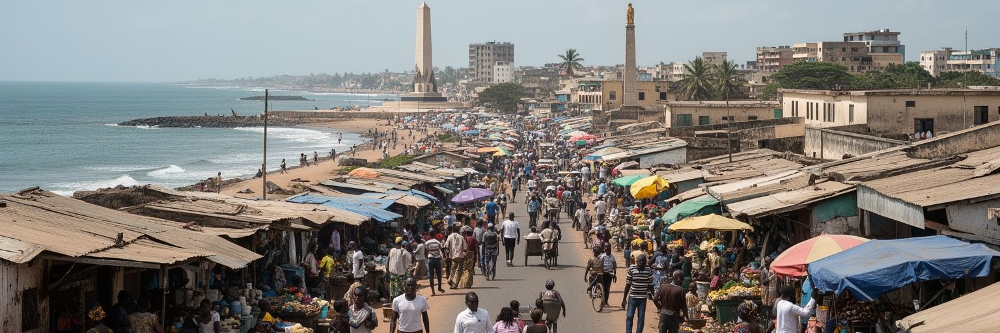
ロメの観光は、巨大な名所を巡るよりも、海岸、市場、記念碑、宗教施設、近郊の湖と村を組み合わせることで深まります。市内ではグラン・マルシェ、独立記念碑、大聖堂、国立博物館、海辺の風景、クラフト、音楽の場が訪問の入口になります。少し足を伸ばせば、トーゴ湖周辺、アネホ方面、湖畔の村、海岸の集落、国境近くの移動の雰囲気も見えてきます。観光客には穏やかな湾岸都市に見える一方、住民にとって海岸は仕事場であり、侵食や排水の不安を抱える生活空間です。市場を歩く時には、値段交渉や写真撮影の作法、宗教的な品や薬草への配慮が必要です。短い滞在でも、ロメを単なる首都のチェックポイントとして通過せず、港、国境、市場、海岸、湖をつなぐ地域の入口として見ると、トーゴの細長い地理がよく分かります。観光の収入が地元の店、ガイド、交通、手工芸、飲食へ残る仕組みも重要です。大きなリゾート開発だけを追えば、海岸の公共性や漁民の暮らしが失われる恐れがあります。ロメの旅の魅力は、派手な景観よりも、日常の市場の力、海風、祈り、越境の近さ、湖へ向かう道の変化にあります。ゆっくり歩くほど、首都の奥行きが見えてきます。街と近郊を一緒に読むことで、観光は消費ではなく地域理解に近づきます。短い移動で都市、湖、国境、村が切り替わることが、ロメ滞在の大きな魅力です。
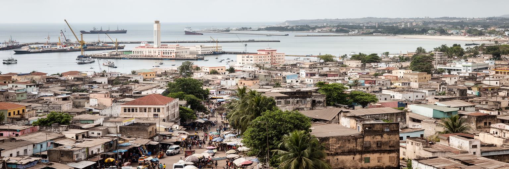
ロメは、人口やGDPの規模だけで世界都市を語る枠からは外れやすい首都です。それでも重要なのは、港、国境、内陸国向け物流、若い労働力、市場の女性商業、宗教の多様性、海岸侵食、植民地史、行政集中、非公式経済が、比較的コンパクトな湾岸都市に重なっているからです。国土の南端に置かれた首都は、北部や中部の農村、サヘルへの道路、ガーナとの日常的な行き来、世界市場から入る商品を結びます。ロメを見ることは、トーゴだけでなく、西アフリカの沿岸と内陸の関係を読むことでもあります。港が効率化すれば国家財政に影響し、市場の価格が変われば家庭の食卓が変わり、海岸侵食が進めば住まいと記憶が揺らぎます。首都としてのロメは、象徴的な広場だけでなく、排水路、モトタクシー、露店、税関、学校、祈りの場の中にあります。都市の課題は多いですが、商売を組み立てる力、言語と信仰を行き来する柔軟さ、国境を生活圏として使う知恵も強いです。ロメを読む時は、貧困や港湾成長の一面だけに閉じず、海から来る世界と内陸へ向かう道、国家の制度と家計の工夫を同時に見ます。そこに、この首都の世界性があります。低い海岸の街は、地域経済の大きな問いを日常の近さで見せてくれます。港の効率、市場の粘り強さ、海岸の危うさを同時に追うことで、ロメは西アフリカの現在を読む入口になります。